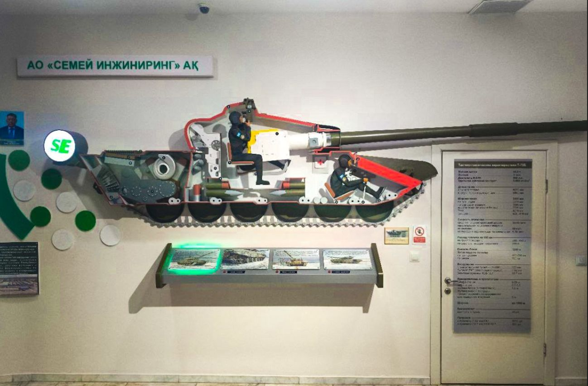

History of Tank Troops
Stop 5 of 10
A hall about armoured warfare, built around a floor-level battle map and an interactive presentation.

Armoured warfare
The museum has a dedicated exhibition on the history of tank troops. Visit Astana lists it among the museum’s seven exhibition areas, and Orda.kz describes an interactive presentation related to the Battle of Kursk and the development of tank troops.
The visual anchor is a large relief map ringed by a red rope. Model tanks are placed on a landscape crossed by arrows, lines and dates, so you look down on a battle the way a commander would look at a table.
Topics
- Origins of armoured warfare
- Tank development during the twentieth century
- Tank warfare during World War II
- Development of armoured forces in Kazakhstan
- Modern armoured vehicles
Interactive history
According to Orda.kz, the hall includes an interactive simulation connected with the Battle of Kursk, allowing visitors to approach the history of a major armoured battle through a museum display.
On the wall nearby, a cutaway tank shows where each crew member sat inside the hull — a small display that makes the machine much easier to understand.
Photographs from this hall
Click a photo to open it full size.
